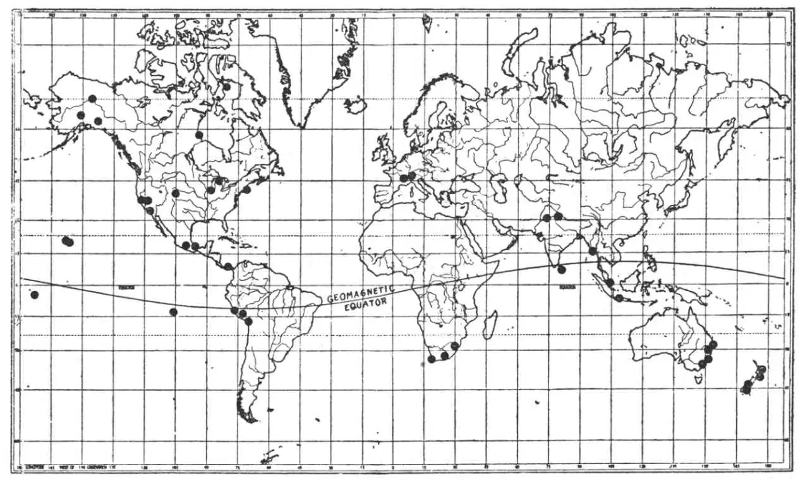
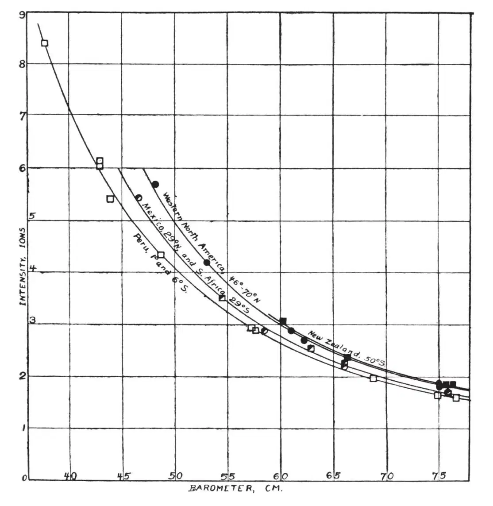
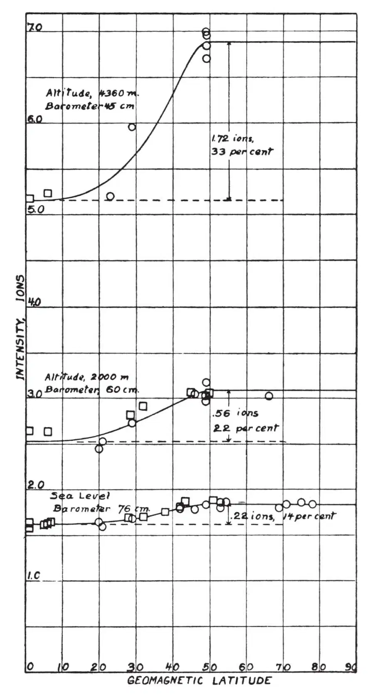
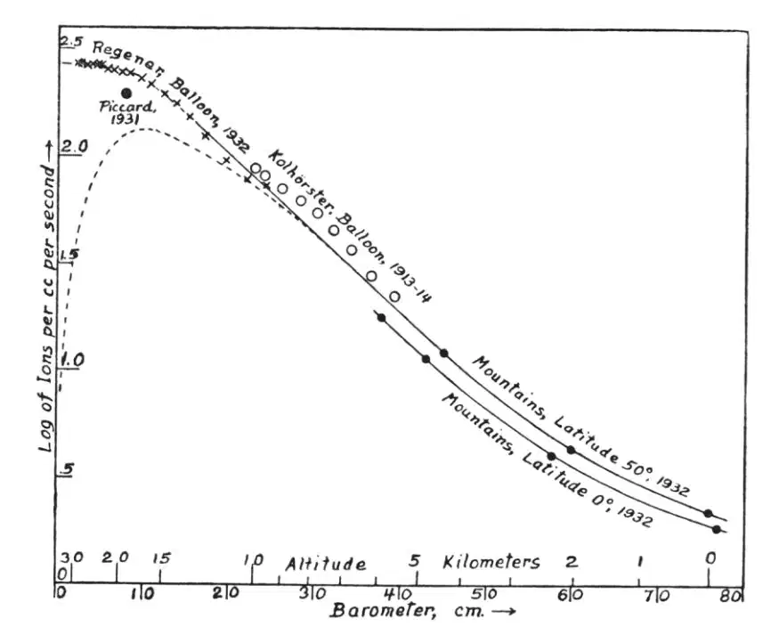

中文
中文A. H. Compton
Editor’s Note
This address by Arthur Compton to a meeting of the American Physical Society describes recent studies of the geographical distribution of cosmic rays, and their variation with altitude. A marked increase in cosmic-ray intensity in temperate and polar latitudes, compared with tropical zones, could be explained if the primary cosmic rays were electrons arriving in two energy ranges, the higher-energy particles being largely unaffected by the Earth’s magnetic field while those in the lower-band are strongly deflected and therefore unable to reach the tropics. The data argue against the particles being photons, but cannot distinguish between ordinary electrons, “positively charged electrons”, or protons or alpha particles. Today we know that most primary cosmic rays are protons. 中文
THERE are three kinds of experiments which seem to afford direct evidence regarding the nature of cosmic rays. These are: (1) the Bothe-Kolhörster double counter experiment, which compares the absorption of the particles traversing the counters with the absorption of cosmic rays; (2) measurements of the relative intensity of cosmic rays over different parts of the earth, designed to show any effect due to the earth’s magnetic field; and (3) studies of the variation of cosmic ray intensity with altitude, which should follow different laws according as the rays are electrons or photons. 中文
(1) The Bothe-Kolhörster experiment serves to measure the absorption in a block of gold or lead of the high-speed electrified particles that produce coincident impulses in two neighbouring counting chambers. It is found that this absorption is surprisingly small, about the same, in fact, as that of the cosmic rays themselves. 中文
The simplest interpretation of this similarity in absorption is to suppose that the high-speed particles in question are the cosmic rays. There is, however, the alternative possibility that the primary cosmic rays are photons which eject high-speed electrons as recoil electrons when the photons are stopped, and that these recoil electrons are absorbed at about the same rate as the primary rays themselves. Theoretical calculations indicate that the recoil electrons should be absorbed five or ten times as rapidly as the photons which give rise to them. These calculations are somewhat uncertain because of extrapolation far beyond the wave-length region where the existing formulae have been tested. For this reason, the equal absorption coefficients of the cosmic rays and the high-speed particles does not necessarily rule out the possibility that the particles in question may be recoil electrons excited by the cosmic rays. It would, nevertheless, be surprising if the formulae were in error by so large a factor as five or ten, as would be implied if the coincidences are due to secondary electrons. 中文
(2) If the cosmic rays consist of electrified particles coming into the earth’s atmosphere from remote space, the earth’s magnetic field should affect their geographical distribution. This effect has been investigated theoretically by Størmer, Epstein, and recently much more completely by Lemaître and Vallarta. It appears that for energies less than 109 electron volts, electrons approaching the earth can reach it only at latitudes north of about 60°. For energies greater than about 5 × 1010 volts the geographical distribution is not affected by the earth’s magnetic field. For intermediate energies, there will be a difference in intensity with latitude according to the distribution of energy of the incoming electrons. 中文
Experimental studies of the relative intensity of cosmic rays in different parts of the world have been made by J. Clay, who made several trips between Java and Holland, and found consistently a lower intensity near the equator; Millikan and Cameron, who found but slightly lower intensity in the lakes of Bolivia than in the mountain lakes of California, and no difference between Pasadena and Churchill close to the north magnetic pole; Bothe and Kolhörster, who carried a counting tube from Hamburg (53° N.) to Spitsbergen (81° N.) and back, and detected no variations in the cosmic rays larger than their rather large experimental error; Kennedy, who, under Grant’s direction, carried similar apparatus from Adelaide, Australia, to Antarctica, and likewise found no measurable change; and Corlin, who on going from 50° N. to 70° N. in Scandinavia found some evidence of a maximum at about 55° N. The prevailing opinion regarding the significance of these measurements has thus been expressed by Hoffman in a recent summary: “The results so far have on the whole been negative. Most of the observers conclude that within the errors of experiment the intensity is constant and equal, and those authors who do find differences give their results with certain reservations.” 中文
During the past eighteen months, Prof. Bennett of the Massachusetts Institute of Technology, Prof. Stearns of the University of Denver, and I have organised a group of ten expeditions, with some sixty physicists, and we have attempted to make as extensive a study of the geographical distribution of cosmic rays as could be done in a limited period of time. Fig. 1 shows the position of the eighty-one stations in different parts of the world at which measurements have been made. These stations are about equally divided between the northern and southern hemispheres. They have extended from latitude 46° S. to latitude 78° N., and from sea level to about 20,000 ft. (Figs. 2 and 3). When these data are brought together, they show a marked difference in intensity between the cosmic rays at temperate and polar latitudes, as compared with the tropical latitudes. At sea level the difference in intensity is about 14 percent, at 2,000 metres about 22 percent, and at 4,400 metres about 33 percent. The change between the intensity for tropical as compared with that for temperate latitudes occurs rather sharply between geomagnetic latitudes 25° and 40°. 中文

Fig. 1. Map showing major stations at which associated expeditions have made cosmic ray measurements during 1932. 中文

Fig. 2. Typical intensity–barometer curves, showing variation of intensity with altitude in different parts of the world. Circles, northern hemisphere; squares, southern hemisphere. 中文

Fig. 3. Variation of cosmic ray intensity with geomagnetic latitude, as found for three different altitudes. The variation is more prominent at high altitudes. Curves calculated from Lemaître–Vallarta theory. 中文
Comparison of the experimental data with the theory of Lemaître and Vallarta shows that the distribution of cosmic rays is about that to be expected if the rays consist of electrons entering the earth’s atmosphere in two energy groups. One of these is of such great energy that it is not appreciably affected by the action of the earth’s field. This group comprises in the temperate zone 88 percent of the total radiation at sea level, and might, so far as these experiments are concerned, be classified as photons. At 4,400 metres this component constitutes 75 percent of the total radiation. The second component is less penetrating and represents particles with an energy, if they are electrons, of about 7 × 109 electron volts. It is these particles which reach the earth at temperate latitudes but fail to reach it near the equator. 中文
It may be remarked that even these less-penetrating cosmic rays have energies which are much larger than those that could be accounted for as recoil electrons resulting from photons, if these photons were to constitute the main body of the cosmic rays. According to Millikan, measurements of the absorption of the cosmic rays at sea level indicate that their energy, if they are photons, is of the order of 2 × 108 electron volts. This is so much less (a factor of 35) than that of the electrons responsible for the difference in intensity between temperate and tropical zones, that we would seem to be safe in concluding that the particles reaching the earth are not of the recoil type. On the other hand, the energy of 7 × 109 electron volts demanded by the Lemaître–Vallarta theory for these particles would mean a range taken along the particle’s trajectory of about three times the thickness of the earth’s atmosphere. This is in accord with the fact that these rays penetrate the earth’s atmosphere, but with difficulty. 中文
This geographical study of the cosmic rays thus indicates that the less penetrating part of the cosmic rays, at least, consists of high-speed electrified particles. Regarding the more penetrating component, we conclude that if they are electrified particles, they must have an energy of 3×1010 electron volts or more. 中文
(3) During the past two years, extensive experiments have been carried out studying the variation in the intensity of cosmic rays with altitude. The highest altitudes have been those reached by Regener with his sounding balloon and Piccard with his famous stratosphere balloon. We have also paid especial attention to this problem in our mountain experiments. In Fig. 4 the data from mountain and balloon observations are compared. These data show a rapid increase in intensity with altitude, continuing nearly exponentially to an altitude of 15 km., and from there approaching a limiting value as the apparatus is carried close to the top of the atmosphere. 中文

Fig. 4. Combined balloon and mountain data on intensity as function of altitude. Broken line, anticipated values for photons. 中文
If we suppose that the cosmic rays enter the earth’s atmosphere as photons, any secondary electrons that may have been associated with them in space will have been removed by the action of the earth’s magnetic field. We should thus have a beam of pure photons entering the atmosphere. At the surface of the atmosphere these photons will produce very little ionisation, for the ionisation results directly from the secondary electrons that pass through the chamber. The secondary electrons, however, arise only at the absorption of the primary photons, and will not approach their normal intensity until the photons have traversed a thickness of air about equal to the range of the electrons. This means that at very high altitudes the ionisation due to a beam of photons entering the earth must be almost zero. The ionisation current should rather approach a maximum at a depth in the atmosphere at which the cosmic rays are somewhat less than half absorbed, and should then gradually diminish in intensity as sea level is approached. Our high mountain experiments confirm the recent balloon experiments as indicating that no such high altitude maximum exists. This would seem to rule out the possibility that the cosmic rays can be photons entering the earth’s atmosphere from remote distances. 中文
If we suppose, on the other hand, that the cosmic rays are electrons entering the atmosphere from above, we should expect very much the kind of intensity–altitude curve that the present experiments show. It is well known that the ionisation per unit path by high speed electrons remains almost constant over a wide range of energies. Thus, if a beam of such electrons enters the atmosphere, it will produce nearly uniform ionisation down to such depths that an appreciable number of the electrons are stopped by the air. If the initial electrons were all travelling downward, there would be a rather definite limit or range where there would be a rapid reduction in the ionisation by the cosmic rays. If, however, the initial electrons entered in all directions, some of them would be stopped even in the upper layers of the atmosphere. Thus, supposing that the cosmic rays consist of electrons entering the earth’s atmosphere from outer space, the general characteristics of the intensity-altitude curve can be readily accounted for. 中文
If Regener’s measurements from his balloon flights during the past summer are reliable, it appears that there is no detectable decrease in ionisation as the top of the atmosphere is approached. This would mean, in accord with the above reasoning, that no appreciable portion of the cosmic rays enters the earth’s atmosphere in the form of photons. 中文
On the other hand, if the cosmic rays enter the atmosphere as electrons, they will produce photons just as cathode rays striking a target produce X-rays. Accordingly, at lower altitudes a mixture of electrons and photons will be present, and it may be expected that the photons will have the greater penetrating power. It is thus not impossible that the very penetrating cosmic rays observed by Millikan, Regener, and others at great depths under water may be such photons excited by the incoming electrons. 中文
Although we have discussed the problem as if the electrified particles which seem to constitute the cosmic rays are electrons, it will be understood that the experiments that have been cited do not serve to distinguish between negatively and positively charged particles. The experiments are equally consistent with the view that the rays consist of protons or high speed α-particles. I find no way of reconciling the data, however, with the hypothesis that any considerable portion of the primary cosmic rays consist of photons. 中文
(131, 713-715; 1933)
* Substance of an address presented at a symposium on cosmic rays, held by the American Physical Society at Atlantic City on December 30, 1932.